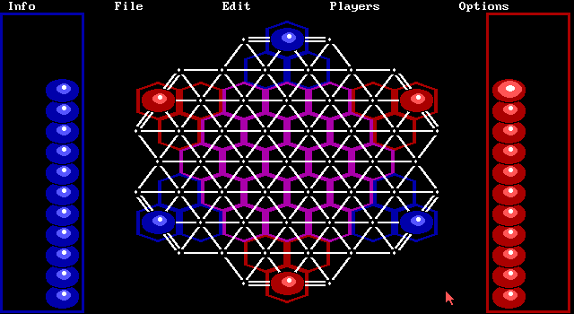

名稱：奇中棋 (TrianGo，英文版)
簡介：Magic Partners 1988年出品的棋類益智遊戲，由California Dreams代理發行，台灣
由智冠代理進口。遊戲玩法為利用棋子圍成三角形，捕殺在三角形區域內的對方棋子
[待補]。

保護：手冊密碼，破解碼：
SHCGA.EXE
46 FE 38 87 F2 20 74 4E 83 7E
87 F2 20 89 46 FE EB -- -- --
SHEGA.EXE
46 FE 38 87 4E 2F 74 4E 83 7E
87 4E 2F 89 46 FE EB -- -- --
SHERC.EXE
46 FE 38 87 A0 37 74 4E 83 7E
87 A0 37 89 46 FE EB -- -- --